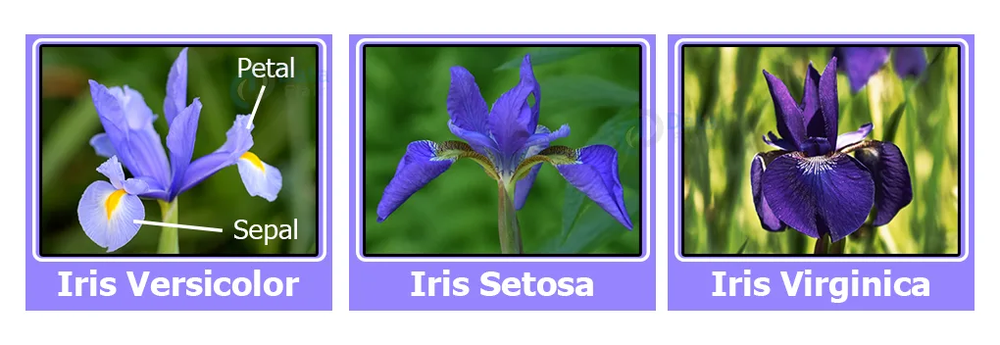

Breast cancer remains one of the most prevalent and life-threatening diseases affecting women worldwide. Early detection of breast cancer significantly improves the chances of successful treatment and long-term survival. In the pursuit of advancing medical diagnostics and improving patient outcomes, I undertook a challenging project focused on breast cancer detection utilizing logistic regression.
This project represents a critical intersection of data science, healthcare, and women's health. Leveraging the power of machine learning, particularly logistic regression, I aimed to develop a predictive model that could assist medical professionals in identifying potential cases of breast cancer with greater accuracy and efficiency.

The Iris dataset consists of measurements of three different species of Iris flowers: Setosa, Versicolor, and Virginica. Each species is characterized by four features: sepal length, sepal width, petal length, and petal width. The goal of this project is to develop a logistic regression model that can accurately classify an Iris flower into one of these three species based on its feature measurements.
In the complex landscape of healthcare, predicting health insurance costs accurately plays a pivotal role in financial planning for individuals, families, and insurers alike. I embarked on a data-driven journey to develop a Health Insurance Cost Prediction model using Linear Regression, an essential project that reflects my commitment to harnessing data science to solve real-world challenges.
The objective of this project is to create a predictive model that can estimate health insurance costs for individuals based on a range of influential factors such as age, gender, body mass index (BMI), smoking habits, region, and more. By leveraging Linear Regression, a foundational machine learning algorithm.

In today's dynamic business landscape, the ability to harness data for informed decision-making is paramount. My journey into the realm of data analysis led me to undertake a comprehensive Sales Analysis project using SQL, a vital endeavor that underscores my commitment to leveraging data to drive business growth.
The objective of this project is to gain valuable insights into sales performance, customer behavior, and market trends by exploring and analyzing a vast dataset of sales transactions. SQL, a powerful and versatile tool for data manipulation and querying, served as the cornerstone of this analysis.

This repository serves as an extensive compilation housing the culmination of my Tableau projects, thoughtfully curated to encapsulate my journey as a data visualization practitioner.